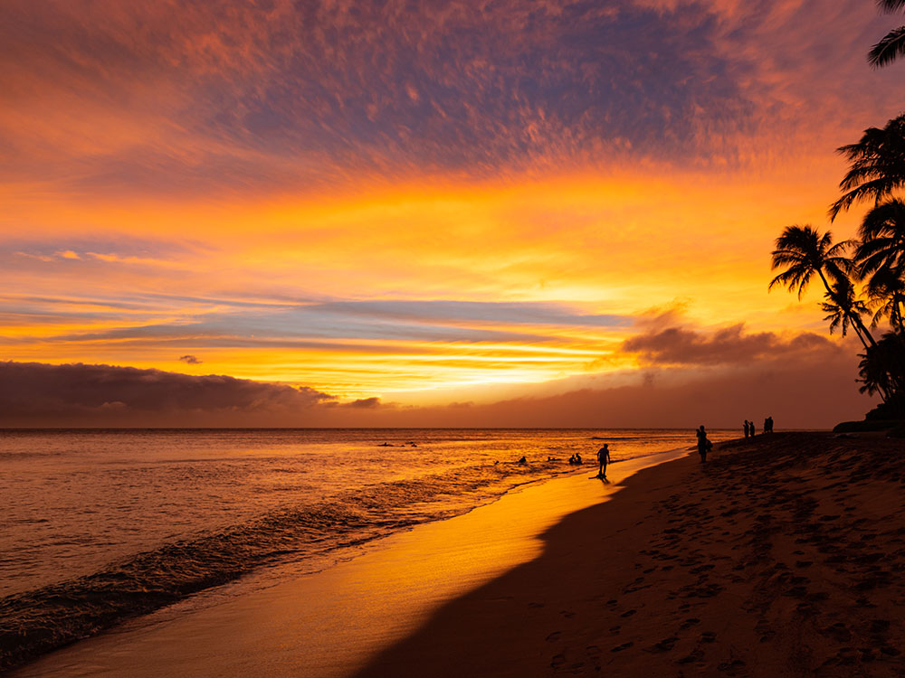
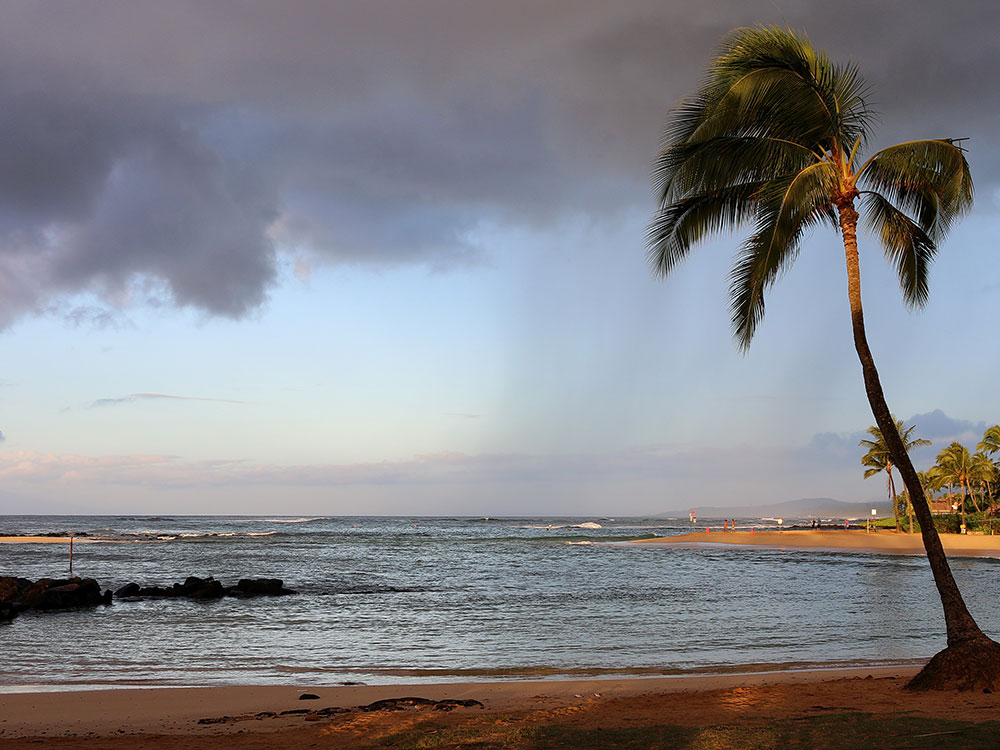
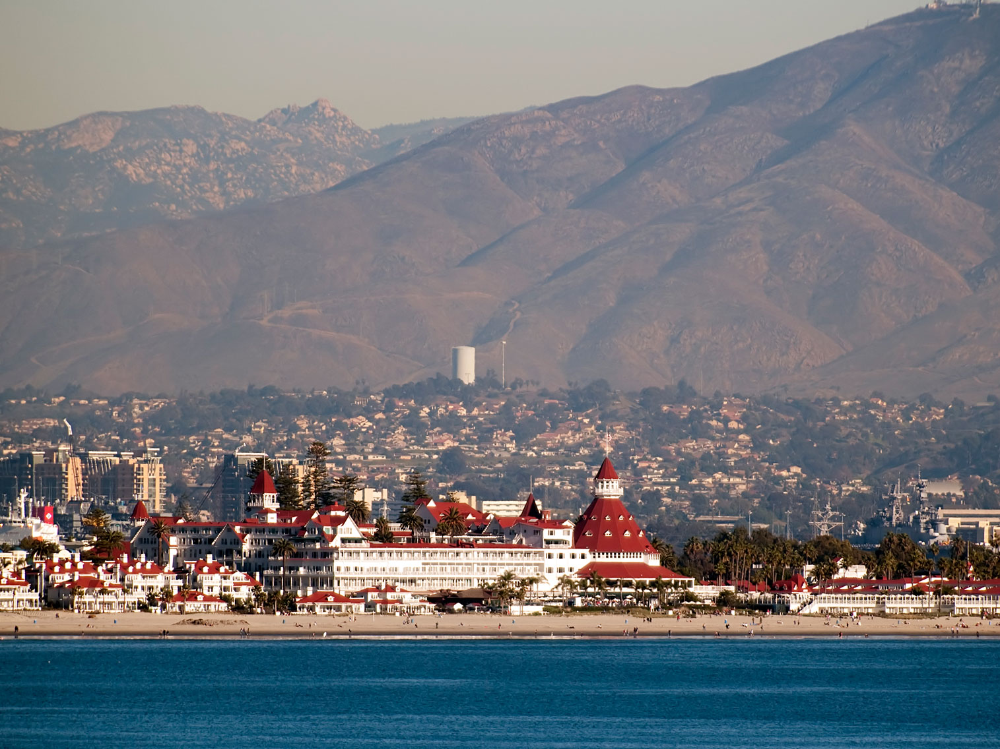
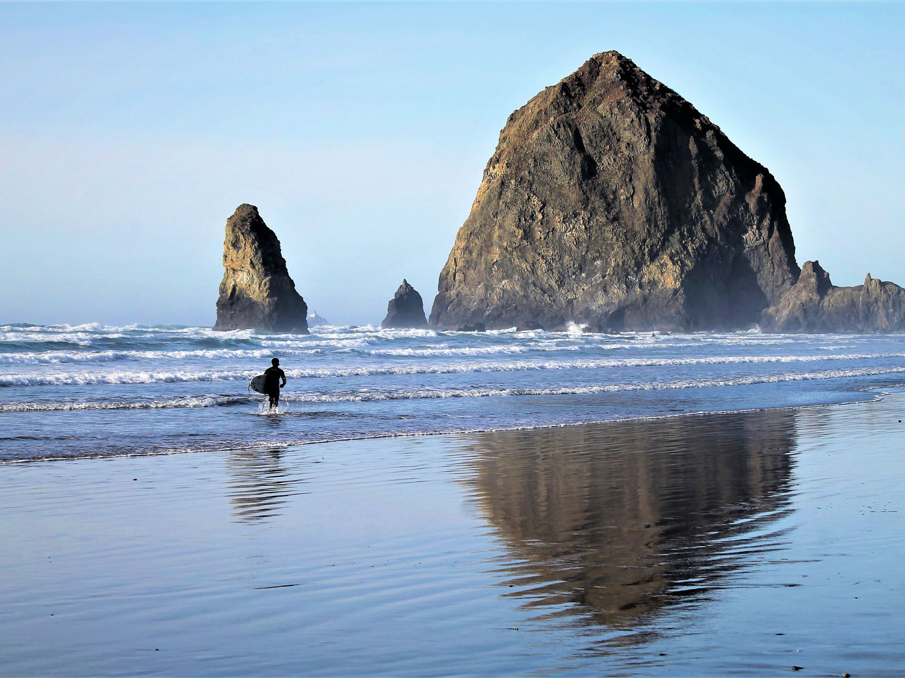
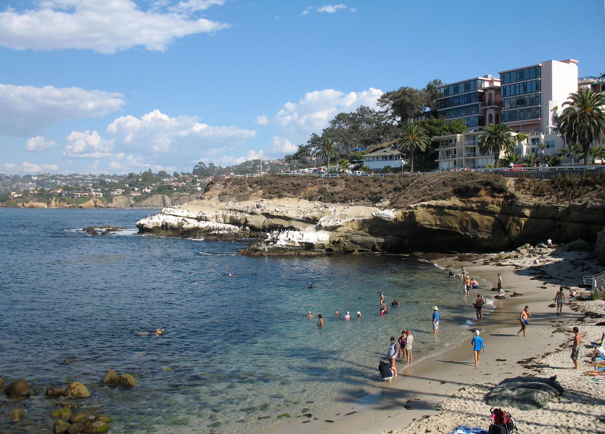
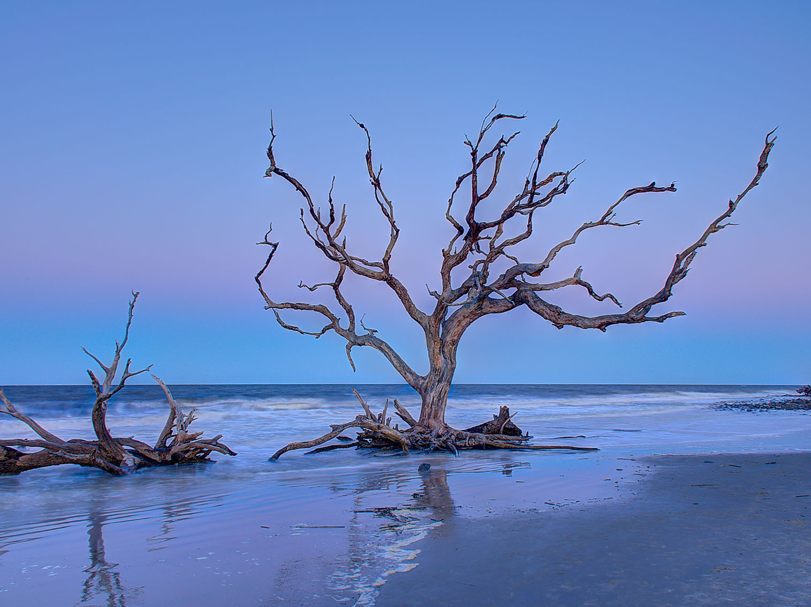
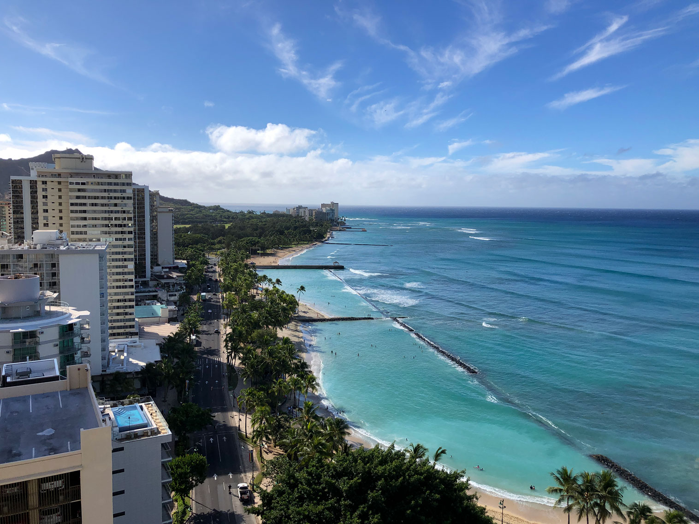

.jpg){kind=link}
America's best beaches showcase an extraordinary diversity of coastal beauty, from Hawaii's tropical shores and California's dramatic Pacific coastline to Florida's white-sand Gulf beaches, the Southeast's barrier islands, and the rugged scenery of New England, offering world-class opportunities for relaxation, recreation, wildlife viewing, and unforgettable ocean vistas.

Paul Kordwig Post.eingang, CC BY-SA 3.0, via Wikimedia Commons; Image Size Adjusted

#1 Kaanapali Beach
Maui, Hawaii
Three-mile stretch of golden sand lined with luxury resorts, shopping, and dining, offering snorkeling, cliff diving, and sunset views along Maui's west coast.

Bob Linsdell, CC BY 3.0, via Wikimedia Commons; Image Size Adjusted
.jpg){kind=link}
#2 Poipu Beach
Kauai, Hawaii
Family-friendly beach with golden sand, calm swimming areas, and frequent sightings of sea turtles and monk seals.

Djh57, CC BY 3.0, via Wikimedia Commons; Image Size Adjusted

#3 Coronado Beach
San Diego, California
Resort city located in San Diego County including Coronado Beach and the famous Hotel del Coronado, built in 1888 and long considered one of the world's top resorts.

#4 Clearwater Beach, Florida
Resort area and a residential area on the Gulf of Mexico on the west-central coast of Florida characterized by white sand beaches stretching for 2.5 miles and sits on a barrier island.

Richardmouser, CC BY-SA 4.0, via Wikimedia Commons; Image Size Adjusted

#5 Canon Beach, Oregon
Popular coastal tourist destination famous for Haystack Rock, a 235 ft sea stack that juts out along the Pacific Coast.

Invertzoo, CC BY-SA 3.0, via Wikimedia Commons; Image Size Adjusted

#6 La Jolla Cove
San Diego, California
Small, picturesque cove and beach that is surrounded by cliffs. The Cove is protected as part of a marine reserve; underwater it is very rich in marine life, and is popular with snorkelers, swimmers and scuba divers.
#7 Henderson Beach State Park
Destin, Florida
State Park located near Destin, with beaches, bicycling, birding, fishing, hiking, picnicking, swimming, wildlife viewing and full camping facilities.

Lee Coursey, CC BY 2.0, via Wikimedia Commons; Image Size Adjusted

#8 Coligny Beach
Hilton Head Island, South Carolina
Resort-oriented barrier island featuring Atlantic beaches, golf courses, maritime forests, nature preserves, and an extensive network of recreational trails.


Dsdugan, CC0, via Wikimedia Commons; Image Size Adjusted

#9 Driftwood Beach
Jekyll Island, Georgia
One of the Sea Islands, one of the Golden Isles of Georgia barrier islands and a popular tourist destination with beaches frequented by vacationers.

Famartin, CC BY-SA 4.0, via Wikimedia Commons; Image Size Adjusted

#10 Waikiki Beach
Oahu, Hawaii
Iconic beachfront district known for its high-rise resorts, historic surf culture, vibrant nightlife, and deep-rooted Hawaiian and Polynesian traditions.